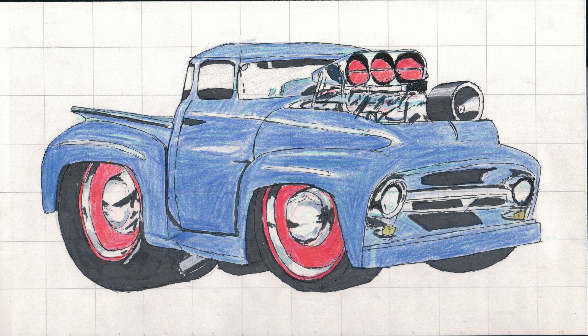

Home
Most Recent Project - Grid Drawing

Grid Drawing of a Truck
|
Current Course - Drafting 1Description:The use of simple and complex graphic tools used to communicate and understand ideas and concepts found in the areas of architecture, manufacturing, engineering, science, and mathematics. View the Units, Essential Standards, and Indicators Here. |